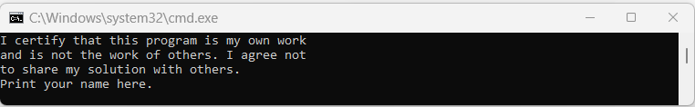
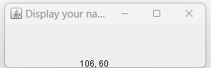

Proj07 Copyright 2020 R.G.Baldwin
Among other things, the purpose of this assignment is to assess your ability to write a Swing program handling mouse events on a JPanel object contained a JFrame object.
This assignment requires that you submit a zip file named YourNameProj07.zip containing the following files where YourName means to insert your last name:
- A Java source code file named Proj07Runner.java.
- A screenshot file named Compare01.png or Compare01.jpg (your choice)
- A screenshot file named Compare02.png or Compare02.jpg (your choice)
PROGRAM SPECIFICATIONS
Beginning with the file that you downloaded named Proj07.java, create a new file named Proj07Runner.java to meet the specifications given below.
Note that you must not modify the code in the file named Proj07.java. Make sure that you understand the code in that file.
Be sure to display your name in both locations in the output as indicated.
When you place both files in the same folder, compile them both, and run the file named Proj07.java, the program must display the text shown in Figure 1 on the command line screen.
Figure 1. RequiredOutput01.png

The image in Figure 1 displays the following text.
I certify that this program is my own work and is not the work of others. I agree not to share my solution with others. Print your name here.
In addition, your program must display a single 300-pixel by 100-pixel JFrame object similar to Figure 2.
Figure 2. RequiredOutput02.png

The image in Figure 2 displays a 300x100 JFrame with the student's name in the banner at the top and one line of black text at the center bottom of the client area. That line of black text reads "160, 60".
When you click the mouse in the client area of the JFrame, the coordinates of the mouse pointer must be shown in black above the mouse pointer and old coordinates must be erased.
For this and the next assignment, the coordinate value must be displayed immediately above and to the right of the mouse pointer. The tip of the mouse pointer must be at the bottom-left corner of the first text character as shown in Figure 3.
Figure 3. Relationship between mouse pointer and position of coordinates.

The image in Figure 3 displays a portion of an enlarged version of a JFrame with the student's name in the banner at the top. The coordinate value "154, 29" appears in black near the center of the client area. An image of the mouse pointer appears with the tip of the pointer slightly below and slightly to the left of the numeral "1". The purpose of the image is to illustrate the required relationship between the mouse pointer and the position of the coordinates when they are displayed. You are not required to submit a screenshot of the image in Figure 3 (see THE DELIVERABLES).
I used the word similar above for the following reason. Depending on your operating system, the JFrame object that is displayed on your system may have a different appearance than on my system.
When I grade your assignment, I will be looking for the following characteristics of the JFrame object that is displayed.
- The object that is displayed must be of type JFrame and not of type Frame.
- Your name must appear in the banner at the top.
- The coordinate values must be displayed in black.
- The relationship between the tip of the mouse pointer and the lower-left corner of the first text character must be as shown in Figure 3. There must be very little space between the tip of the mouse pointer and the bottom-left corner of the first text character.
- When I click as close as possible to the bottom of your JFrame, the y-coordinate value must be close to 60, which is the height of the JFrame less the banner at the top of the JFrame (as shown in Figure 2). That value may be different on your system depending on the height of the banner at the top of the JFrame object. The main point is that it should be significantly less than the height of the JFrame which is 100 pixels. The 0,0 coordinate location is at the upper-left corner of the JPanel object, which covers the client area of the JFrame object.
- Each time I click the mouse in the client area of the JFrame, the old coordinates must be erased before new ones are displayed.
- When I click the X-button in the upper-right corner of the JFrame object, the program must terminate and MUST RETURN CONTROL TO THE OPERATING SYSTEM.
You may find it necessary to consult the Java documentation and take class inheritance into account to meet these specifications.
The zip file from which you extracted this document contains all of the class files for my version of the program. Before you submit your assignment, you should run your code side-by-side with my code and confirm that the behavior of your version matches the behavior of my version. By match I mean they show the same coordinate values, approximately the same text size, etc. for the same types of events.
If you have issues running my code, please let me know. That would probably be the result of a Java version issue and I will help you work through it.
SUBMITTING YOUR ASSIGNMENT
Encapsulate the required files in a zip file named YourNameProj07.zip and submit the zip file as a Blackboard assignment.
Your zip file must contain the screenshot files listed above under THE DELIVERABLES in addition to any other files that may be listed there.
The zip file from which you extracted this document contains a file named RequiredOutput01.png and a file named RequiredOutput02.png.
The screenshot files that you submit must be a screenshots showing a side-by-side comparison of the output from your program and the given files named RequiredOutput01.png and RequiredOutput02.png. Place the given file on the left, place your output on the right, and take the screenshot.
The purpose of the screenshots is to confirm that your output matches the required output. If it doesn't match, don't bother submitting it because you won't get credit for the assignment if it doesn't match. Just keep working on it until you get a match. Consult your instructor if you have any questions regarding what does and what does not constitute a match.